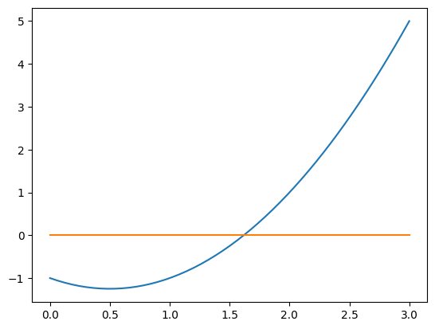

Método da Bissecção#
import numpy as np
import matplotlib.pyplot as plt
O algoritmo mais simples para encontrar raízes é o método da bissecção. O algoritmo se aplica a qualquer função contínua \(f(x)\) em um intervalo \([a,b]\) onde o valor da função \(f(x)\) muda de sinal de \(a\) para \(b\). A ideia é simples: divida o intervalo em dois, uma solução deve existir dentro de um subintervalo, selecione o subintervalo onde o sinal de \(f(x)\) muda e repita.
Algoritmo#
O procedimento do método da bissecção é:
Escolha um intervalo inicial \([a_0,b_0]\) tal que \(f(a_0)f(b_0) < 0\).
Calcule \(f(m_0)\) onde \(m_0 = (a_0+b_0)/2\) é o ponto médio.
Determine o próximo subintervalo \([a_1,b_1]\):
Se \(f(a_0)f(m_0) < 0\), então seja \([a_1,b_1]\) o próximo intervalo com \(a_1=a_0\) e \(b_1=m_0\).
Se \(f(b_0)f(m_0) < 0\), então seja \([a_1,b_1]\) o próximo intervalo com \(a_1=m_0\) e \(b_1=b_0\).
Repita (2) e (3) até que o intervalo \([a_N,b_N]\) atinja um comprimento predeterminado.
Retorne o valor do ponto médio \(m_N=(a_N+b_N)/2\).
Uma solução da equação \(f(x)=0\) no intervalo \([a,b]\) é garantida pelo Teorema do Valor Intermediário, desde que \(f(x)\) seja contínua em \([a,b]\) e \(f(a)f(b) < 0\). Em outras palavras, a função muda de sinal ao longo do intervalo e, portanto, deve ser igual a 0 em algum ponto no intervalo \([a,b]\).
Erro Absoluto#
O método da bissecção não produz (em geral) uma solução exata para uma equação \(f(x)=0\). No entanto, podemos fornecer uma estimativa do erro absoluto na aproximação.
Teorema. Seja \(f(x)\) uma função contínua em \([a,b]\) tal que \(f(a)f(b) < 0\). Após \(N\) iterações do método da bissecção, seja \(x_N\) o ponto médio no \(N\)-ésimo subintervalo \([a_N,b_N]\)
Existe uma solução exata \(x_{\mathrm{verdadeiro}}\) da equação \(f(x)=0\) no subintervalo \([a_N,b_N]\) e o erro absoluto é
Note que podemos rearranjar o limite do erro para ver o número mínimo de iterações necessárias para garantir um erro absoluto menor que um \(\epsilon\) prescrito:
Implementação#
Escreva uma função chamada bisection que receba 4 parâmetros de entrada f, a, b e N e retorne a aproximação de uma solução de \(f(x)=0\) dada por \(N\) iterações do método da bissecção. Se \(f(a_n)f(b_n) \geq 0\) em qualquer ponto da iteração (causado por um intervalo inicial ruim ou erro de arredondamento nos cálculos), então imprima "Método da bissecção falha." e retorne None.
def bisection(f,a,b,N):
'''Approximate solution of f(x)=0 on interval [a,b] by bisection method.
Parameters
----------
f : function
The function for which we are trying to approximate a solution f(x)=0.
a,b : numbers
The interval in which to search for a solution. The function returns
None if f(a)*f(b) >= 0 since a solution is not guaranteed.
N : (positive) integer
The number of iterations to implement.
Returns
-------
x_N : number
The midpoint of the Nth interval computed by the bisection method. The
initial interval [a_0,b_0] is given by [a,b]. If f(m_n) == 0 for some
midpoint m_n = (a_n + b_n)/2, then the function returns this solution.
If all signs of values f(a_n), f(b_n) and f(m_n) are the same at any
iteration, the bisection method fails and return None.
Examples
--------
>>> f = lambda x: x**2 - x - 1
>>> bisection(f,1,2,25)
1.618033990263939
>>> f = lambda x: (2*x - 1)*(x - 3)
>>> bisection(f,0,1,10)
0.5
'''
if f(a)*f(b) >= 0:
print("Bisection method fails.")
return None
a_n = a
b_n = b
for n in range(1,N+1):
m_n = (a_n + b_n)/2
f_m_n = f(m_n)
#print(n)
#print(a_n)
#print(b_n)
#print(m_n)
#print(f_m_n)
if f(a_n)*f_m_n < 0:
a_n = a_n
b_n = m_n
elif f(b_n)*f_m_n < 0:
a_n = m_n
b_n = b_n
elif f_m_n == 0:
print("Found exact solution.")
return m_n
else:
print("Bisection method fails.")
return None
return (a_n + b_n)/2
f = lambda x: x**2 - x - 1
bisection(f,1,2,25)
1.618033990263939
import numpy as np
import matplotlib.pyplot as plt
x=np.linspace(0,3,51)
y=f(x)
plt.plot(x,f(x))
plt.plot(x,0*x)
plt.show()

Exemplos#
Razão Áurea#
Vamos usar nossa função com os parâmetros de entrada \(f(x)=x^2 - x - 1\) e \(N=25\) iterações em \([1,2]\) para aproximar a razão áurea
A razão áurea \(\phi\) é uma raiz do polinômio quadrático \(x^2 - x - 1 = 0\).
f = lambda x: x**2 - x - 1
approx_phi = bisection(f,1,2,25)
print(approx_phi)
1.618033990263939
O erro absoluto é garantido ser menor que \((2 - 1)/(2^{26})\), que é:
error_bound = 2**(-26)
print(error_bound)
1.4901161193847656e-08
Vamos verificar se o erro absoluto é menor que este limite de erro:
abs( (1 + 5**0.5)/2 - approx_phi) < error_bound
True
Exercícios#
Exercício 1
A função \(f(x) = x^3 - x - 2\) tem uma raiz real no intervalo \([1, 2]\). Use a sua função bisection para encontrar uma aproximação para esta raiz com 15 iterações. Qual o valor encontrado?
Exercício 2
Você precisa encontrar a raiz da função \(f(x) = e^x - 3\) no intervalo \([1, 2]\). Antes de calcular a raiz, determine o número mínimo de iterações (N) necessárias para que o método da bissecção garanta um erro absoluto menor que \(10^{-7}\). Após encontrar N, calcule a raiz com esse número de iterações e verifique se o erro real em relação a \(\ln(3)\) é de fato menor que a tolerância.